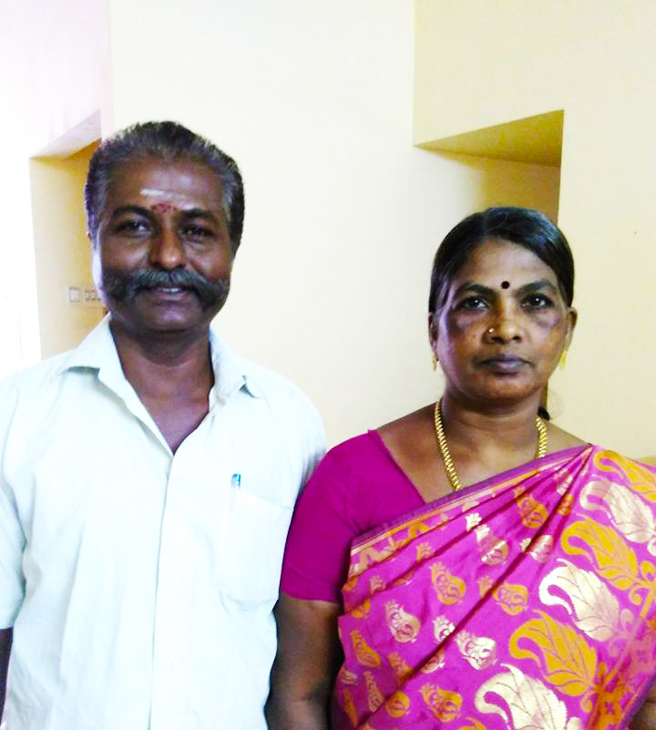

WELCOME TO SREE MAHALAKSHMI JODHIDA NILAYAM
ஜோதிடர்: திரு எம்.ஆர்.ராமச்சந்திரன்
SREE MAHALAKSHMI JOTHIDALAYAM was started in the year 1987 and continued its service for the human cause giving Astrological prediction and remedies for any obstacles. This Jothidalayam was started under the guidance of great Astrologer SHRI M.R.RAMACHANDRAN. We have also specialized in NUMEROLOGY, and MEDICAL ASTROLOGY. Our clients who were from all parts of world have benefited to overcome their Dhosham like delay in Marriage / problems in married life. Diseases, Finance problems and Puthra Bhakyam. Also for their Pithru dhosham the remedies were given as per Vedic Astrology.
SREE MAHALAKSHMI JOTHIDALAYAM has got vast experience in Vedic Astrology, Numerology & Medical Astrology. In addition to this we have specialized in naming new born child / Companies / Industries as per Vedic /astrology and Numerology with trending and cultural names.